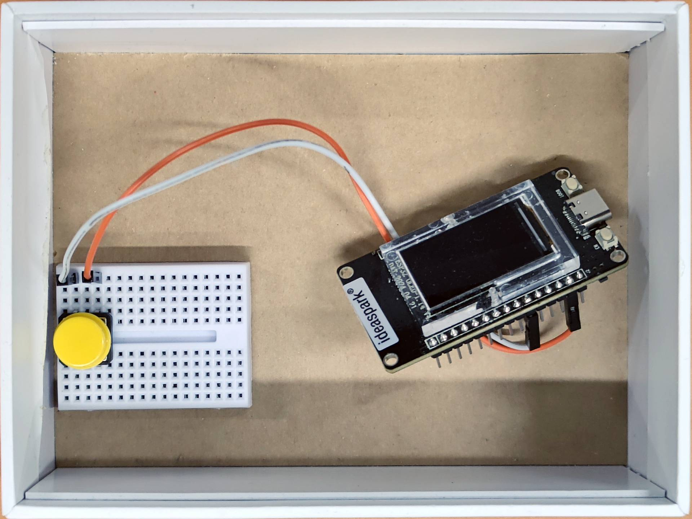
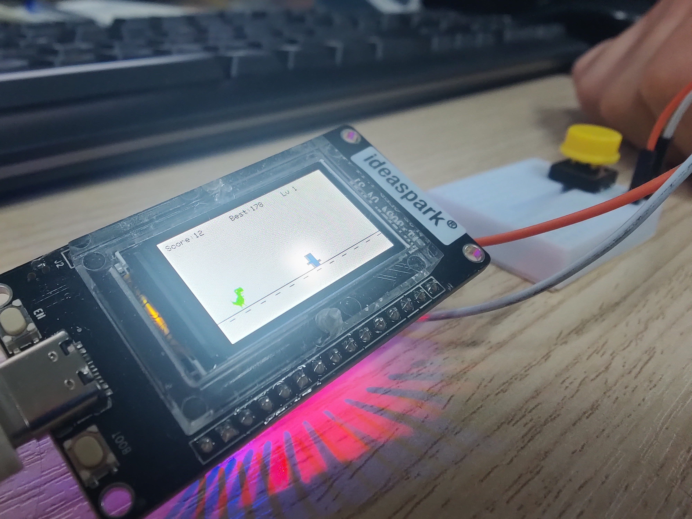
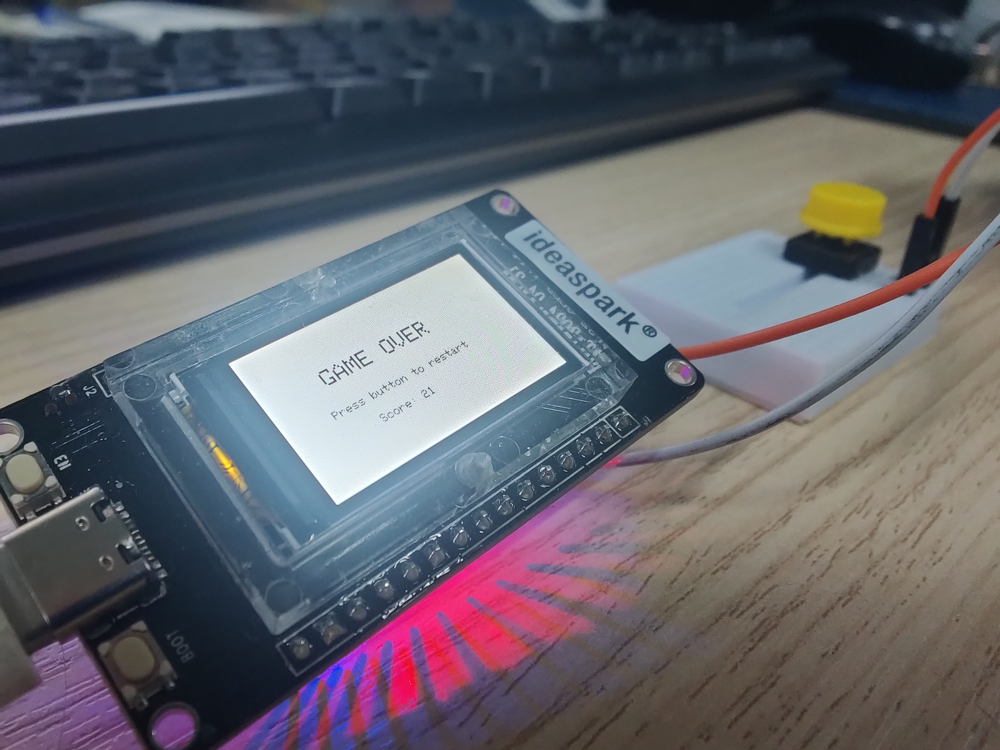

07. Dino Game (Chrome Offline) για ESP
Εκπαιδευτικό game project που αναπαράγει την εμπειρία του offline Dino του Chrome, πάνω σε ESP πλατφόρμα με ενσωματωμένη οθόνη TFT ST7789.
Περιγραφή
Η κατασκευή υλοποιεί βασικό endless runner gameplay με άλμα μέσω push button, εμφανίζοντας γραφικά και animation απευθείας στην onboard οθόνη της πλακέτας.
Ολοκλήρωση της κατασκευής στον Σύλλογο Τεχνολογίας Θράκης
Ομάδα Κατασκευής: Δημήτρης Κ., Γιάννης Γ., Άρης Τ.
Α. Λειτουργίες λογισμικού
- Gameplay τύπου Chrome Dino με εμπόδια και score
- Χρήση Adafruit_GFX και Adafruit_ST7789
- Υποστήριξη custom γραφικών μέσω των αρχείων gameover.h και noInternet.h
- Έλεγχος με ένα κουμπί (jump)
Β. Υλικά
- ESP Ideaspark με ενσωματωμένη TFT ST7789
- 1x Push button
- 2x Dupont καλώδια
- Τροφοδοσία μέσω USB
Γ. Συνδεσμολογία
- GPIO 27 → Button Pin A
- GND → Button Pin B
Η οθόνη ST7789 είναι ήδη συνδεδεμένη εσωτερικά στην πλακέτα Ideaspark, οπότε δεν απαιτείται εξωτερική καλωδίωση για display.
Δ. Οδηγίες εκτέλεσης
- Ανοίξτε το Dino.ino μαζί με τα gameover.h και noInternet.h στον ίδιο φάκελο
- Στο Arduino IDE επιλέξτε board: ESP32 Dev Module
- Επιλέξτε σωστή θύρα και ανεβάστε τον κώδικα
Σημείωση WIP
Σε night mode έχει καταγραφεί ότι ο dino μπορεί να εμφανίζει λευκό περίγραμμα (halo effect). Το project βρίσκεται σε ενεργή βελτίωση.
Παρουσίαση
Video λειτουργίας στο YouTube: Dino Game Gameplay
Φωτογραφίες


